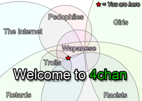

4chan
 De: La Frikipedia, la enciclopedia extremadamente seria.
De: La Frikipedia, la enciclopedia extremadamente seria.

|
¡¡Esto es pa' adultos!! Este artículo debe ser trasladado a algun otro wiki porque contiene cochinadas que hacen enfadar a Adsensio Gúglez, dueño de AdSense. Así que alguien que sea mayor de edad, debe llevar el material ya que frikipedia no es una página pr0n.
|
| De la serie sitios web de ayer y de hoy:
|
| 4chan
|
| 
|
| ¿Sitio social? mis cojones
|
|
| Dirección:
|
[1]
|
| Se dedica a:
|
4 TEH LULZ
|
| País de origen:
|
Japón-USA
|
| Año de fundición:
|
De antes de internet
|
| Propietario:
|
MediaMark
|
| Creador:
|
m00t
|
| Estado actual:
|
ಠ_ಠ ¿Florida?
|
<p style="font-family:Courier, monospace; font-size:small">«Longcat is loooooooooooooooooooooooong»
~ Friki Posteando en 4chan sobre Longcat y su gran pene tamaño
«I See What You Did There»
~ Fry Sobre lo que haces ahi
4Porno es la clara muestra de que Dios nos ha abandonado en este mundo, de que la humanidad esta cada día mas cerca de su autodestruccion, de que en el internet no hay mujeres, y la prueba irrefutable de que Estados Unidos, no debió detenerse al bombardear Hiroshima y Nagazaki, sino que debieron eliminar la puta isla de la faz de la tierra.
Pero a todo esto ¿Que es 4chan?, mejor dicho, que no es 4chan, ya que con todo lo que tiene para ofrecernos, lo de menos es buscar una definición a esta aberración llamada web, para algunos puritanos conservadores, creyentes de nuestro Divinidad Tallarinesca, es el hueco al infierno y que el www seria el equivalente al 666, para la Wikipedia y los que plantean la teoría conspirativa es una nueva táctica para conquistar el mundo, estropeando la mente y el cuerpo a la juventud de América, y para otros, es una simple una pagina web donde hay cosas que el humano promedio no esta acostumbrado a ver, cosas que la humanidad no esta preparado para entender, cosas que no deberían existir pero existen, cosas espeluznantes y escalofriantes, donde la mutilaciones, el porno gay, el CP, y otras cosas raras son cosas rutinarias de todo los días, hogar y cuna de los trolls, pedófilos, dementes mentales, y tal vez probablemente tu.
Reglas
- No hablar de /b/
- NO hablar de /b/ (Sigo sin entender)
- Somos todos anonymous (menos yo,el usuario troll)
- Anonymous es una legion.
- **SE SALTARON OTRAS 40 REGLAS DE ANONYMOUS**
- Mas lo odias,mas poder tiene.
- Nada se toma enserio (
excepto la regla 8)
- Porno o te vas (La unica regla que se toman en serio)
- TODO LO QUE ESTE EN MAYUSCULAS SE LEE PRIMERO.
- Aunque no hablas de porno,alguien si lo hara.
- 4chan no es un foro.
- Si cometes un error,eres el pendejo del tema.
- Eres el pendejo del tema hasta que alguien mas lo sea.
- Todo lo sacas de Google imagenes.
- Un meme no se crea.
(Excepto si es en 4chan)
- DSFARGEG es el meme mas odiado(Ya hasta te banean si lo pones)
- No te metas con trolls,ellos ganaran.
- En /v/ un dia nuestro son
 topicos.
topicos.
Contenidos

Esto no es 4 chan, pero casi.
y todo copiado de 2chan, te sorprendería lo que puedes encontrar ahí, por eso es que en 4chan se divide por secciones, para aquellos Otakus que nunca salen de su casa y eyacula viendo Naruto 4chan cuenta con varias secciones pensando en ellos, como /a/ donde postean imagenes anime y sueñan con algún día poder lanzar un kameha, /c/ que significaría Anime/Cute es la sección donde postean imagenes lolicon que los otakus consideran "moe" (y no nos referimos a moe el cantinero) y discuten para saber cual es la imagen mas tierna patético, también esta /w/ que es Anime/Wallpapers donde no se conforman solo estar hablando de anime todo el día, si no también tienen que tener un protector de pantalla anime, /m/ que significa Mecha donde postean imagenes de robots de pelea, /cgl/ la sección de Cosplay & EGL donde los frikis disfrutan posteando sus imágenes de sus cosplays, /cm/ de Cute/Male es parecido a /c/ solo que mas patético ya que postean imágenes de niños anime.
Pero no se preocupe no todo es anime, 4chan también piensa en los pajilleros de la casa, esos que cuando no andan viendo porno se dedican a editar en enciclopedias de libre contenido y chatear en el irc, por eso 4chan cuenta con la sección (18+) aunque ya todo el maldito lugar es para mayores, en donde esta /s/ la sección de Sexy Beautiful Women donde postean imagenes de modelos mostrando todo, /hc/ de Hardcore donde se encuentran imagenes de sexo raras y poco convencionales, /h/ Hentai lo que todo friki con mucho tiempo libre y sin novia desea, ver a sus personajes de anime favoritos teniendo relaciones donde la regla 34 esta en vigencia, también están los muchos géneros del hentai como /e/ de ecchi, /u/ de Yuri, /d/ de Hentai/Alternative, /y/ de Yaoi donde los Mariscos y mariscales abundan.
Y sobre todo la sección favorita, /b/ la sección random, la sección mas visitada, entre solo bajo su propio riesgo, por que lo que vera ahí lo sorprenderá, aun punto de querer sacarse los ojos y tirárselos al suelo, la única sección en la que no existen reglas, aquí se puede insultar, discriminar, postear imágenes de muy mal gusto, y tener una actitud completamente reprobable en la sociedad, si quiere ver lo que /b/ tiene apreta aquí y veras lo que /b/ tiene para ti.
En todas estas secciones siempre encontraremos lo mismo Pr0n, memes, y a los bilingües.
Pr0n
Si algo se caracteriza 4chan, es por tener pr0n de calidad, para todo los gustos, filias y fetiches, de cada 10 post 6 son pr0n, y no importa si estas en /a/ o en /fa/ o inclusive /toy/ siempre veras pr0n, te sorprenderia saber los tipos de pr0n que encontraras por ahi.
Almacenamiento de pr0n usado:
Memes
Si hay algo que abunda en 4chan aparte del porno chino, son los memes, Ídolos Virtuales que son queridos y aclamados por muchos, cada uno tiene su origen, y su propio significado (la mayoria de doble sentido), los memes pueden ser frases como imagenes.
Como en la Frikipedia valoramos su tiempo, no queremos hacerle perder su tiempo nombrando a los 150 miles de memes que tiene 4chan, así que les nombraremos los mas conocidos.
- Long Cat (Cattus Longious, Feline Maximus, en Latin: Felix Longus) el meme favorito de todos, conocido por ser el gato mas laaaaaaaaaaaaaaaaaaaaaaaaaaaaaaaaaaaaaaaaaaaaaaaaaargo del mundo, sus 3,04800 metros de altura los demuestran, cifra que nunca llego a ser comprobada por lo científicos, ya que no habría regla para medir a tan inmenso animal, ganador del record Guiness por ser el gato mas largo del mundo, mas largo que la Torre Eiffel, el empire stade, Sears Towe, y las Torres Petronas.
«Esto es photoshop»
~ Tu Después de haber visto la foto original de Long Cat
Nada de de photoshop, Long cat es tan real como que 2+2=pez
- Cockmongler segun nos cuentan los veteranos de /b/, los cuales vieron nacer esta leyenda, nos dicen que Richard C. Mongler es un hombre normal como cualquiera de nosotros, hasta llegada la noche que se convierte en el Cockmongler, cuyo significado es "Alguien que disfruta jugando con su en un área pública" , reconocido por tener una sonrisa perturbante, y llevar con el una polera negra que dice T-rex, su misión principal en este mundo según las ordenes de Raptor jesur es el de insertar tu miembro viril en su órgano bucal y dar uso a su músculo con papilas gustativas, asi que yo si fuera tu me estaria cubriendo bien allá abajo y dormiría con el cuarto con llave, porque tal vez el Cockmongler aparezca y lo que te hará, no te gustara para nada (o tal vez si?).
Alteramos la imagen original para que se apta a todo publico
- Happy Negro al igual que el Cockmongler uno de los memes mas antiguos, Happy negro enrealidad es un actor porno de una pagina web de peliculas para adultos, la cual por su seguridad no enlazaremos, donde la pelicula consiste en subir mujeres a un autobus (bang bus) y tener relaciones sepsuales con ellas, en donde Santino Lee mas conocido por Happy Negro, es uno de los actores de dicha pelicula, su popularidad se basa en la cara de sorpresa que pone al momento de agarra las mercancia.
HOYGAN: Si quiere ver las peliculas de Happy nergro entrar aqui
- Rickroll Antes que nada sabemos que Rick Astley never gonna give you up, and never gonna let you down (si no sabes ingles te jodes), dicho esto quedan las cosas mas claras, un Rickroll es una broma que se le hacen a los n00b, que consiste en enlazar un link diciendo que es de algo, pero enrealidad te envia a un video musical de Rick Astley llamado "Never Gonna Give You Up", como en el caso de arriba que era mas facill buscar en www.usaelputogoogle.com
IMPORTANTE: cansado de caer en la misma broma pesada una y otra vez como un vil n00b?, no se preocupe, frikipedia siempre vela por sus usuarios, les recomendamos entrar a la siguiente pagina, Cargue el sitio web, y haga clic en 'terrorismo doméstico' y luego 'Rickrolling", asi podra identificar facilmente como esta siendo víctima de un Rickrolling. http://www.internetisseriousbusiness.com/
Bilingües
Son personas que saben inglés, escriben español y usan el japonés por burlarse personas como Tú Se meten a sitios como 4chan a enriquecerse y de paso postear 1.000.000.000 imagenes sin sentido con comentarios que ni Diox ni Chuck Norris entenderían y se clasifican en tres tipos:
- Los que hablan Español: Escriben en inglés, lo que no saben en inglés lo escriben en español y de paso presumen su poco japonés de friki sin nada que hacer. Un claro ejemplo de este sería "Hey I want download this program, Como le hago? De antemano Arigatou PS: Help me por favor"
- Los que hablan Inglés: Copian a los japoneses cuando de verdad no saben lo que dicen, de paso si quieren respuesta rapida hablan en su idioma si es que les da la gana o estan desesperados.
Mini Diccionario de 4chan
Primera vez en 4chan?, no entiendes nada de lo que hay ahi?, tranquilo, te tenemos la solución, el minidccionario de 4chan, edición frikipédica ya esta disponible, si no quieres que te digan algo como '"ENGLISH MOTHERFUCKER, DO YOU SPEAK IT?"' te sugerimos leer esto.
- MOAR: se puede interpretar de varias formas esta palabra, esta es una combinación de "more" y "roar" (más y rugido), usada cuando alguien está colocando una gran cantidad de imágenes, las cuales se disfruta mucho y piden mas, ya que la cantidad de fotos enviadas, todavía no a calmado su hambre de fotos.
- Epic Fail:Cuando se intenta postear algo con el fin de hacer reir a los demas o simplemente sorprenderlos, pero se hace mal (la caga), viendose ante los demás como un idiota (vease Namefags y Newfags).
- WEEABO:Personas que se comportan como nipones (adoptan sus costumbres y su forma de hablar) pero no lo son, y se ven estupidas (vease Green-tea y -Desu).
- O RLY: contracción de "Oh, really?", que se podría traducir al español como "¿O Realmente?", representado comúnmente por un búho blanco con cara de sorprendido.
- Troll:Cuando un post tiene como fin alarmar a la gente de buen corazon y buenas costumbres (en 4 chan abundan) , haciendolos discutir entre si y agarrarse a mordidas.
- Its a Trap!:El aviso de que el post es malicioso en algun sentido (vease Troll), aunque también es mas usado cuando se trata de hombres haciendose pasar por mujer.
- DSFARGEG No lo uses si no quieres terminar baneado.
- I CAME: Dígase cuando algo que postearon te gustó mucho, expresión siempre acompañada de una imagen con cara de orgasmo.
- CP: Iniciales muy sonadas en 4chan, existente muchas versiones de lo que significan; Computer Procesor, Clear Point, Copy & Paste... Cold pasta. Dice la leyenda que en realidad estas iniciales significan
Chi|dPr0n.. nunca ah sido comprobado, lo unico que sabemos, es que si la FBI te encuentra con mucho CP, puedes terminar en la carcel.
- AYBABTU: iniciales de All your base are belong to us, traducido como Todas sus base son pertenecen, es el resultado de traducir videojuegos atraves de traductor google, el cual trae terrible resultados como podemos ver.
- LOL WUT: Similar a lol wtf. Cuando alguien dice algo estúpido, y usted probablemente no entendió lo que acaban de decir, simplemente coloca imagen de una pera con boca abierta, para expresar la confusión.
- NO U: No Tu, usese cuando 2 personas discuten.
- fgsfds: Puede significar “FOR GOD SAKES, FUCK DIS SHIT!”, “FUCKING GOAT SHIT, FETA DOESN'T SMOKE!, o tal vez simplemente letras al puestas al azar con la mano izquierda, algo asi como asdf...
- AWESOME:Algo que los estadounidenses usan para describir todo. DIS IS AWESOME!!!1!!!11one!
- OVER 9000: It's over 9000!.
Un día normal en /b/
Mientras tanto,en /s4s/
File:
Imagen:SlowCombo1.jpg-(251 × 251 píxeles 5 KB)
Anonymous 17:43 1 jan 2013 (UTC) [
Reply ]
If dubs this is our god.
|
Troll|18:01 2 nov 2008 (UTC) Reply
Re-Rolling for faggot OP
|
|
|}
File:
Imagen:gay.jpg-(251 × 251 píxeles 5 KB)
Gay 17:43 9 nov 2013 (UTC) [
Reply ]
Fortune:Godly Fortune!
Godly fortune and i become gay
File:
Imagen:fail.jpg-(251 × 251 píxeles 5 KB)
Anonymous 17:43 10 Sep 2013 (UTC) [
Reply ]
Any CP for my collection?
|
Anonymous 03:38 11 nov 2013 (UTC) Reply
Take your Cheese Pizza and GTFO.
|
|
Dato curioso
4chan tiene es un clon malvado de 2chan (el chan japonés) con menos post, más n00bs y un 70% de más faltas ortográficas, que de paso tiene menos popularidad y no es bilingüe (4chan 2chan no tiene "©", "®" o "™" porque se reducen a no protejerse de copia/paste).
Autor(es):
- Krusher
- Doctor grijander
- Frikiman
- Epikurolibre
- Roms
- Frikih
- Diegocon13
- Darthas
- Pedrosa
- Cibercrank
Frikipedia 2005-2016, Licencia
GFDL 1.2 - Extraído por FrikiLeaks